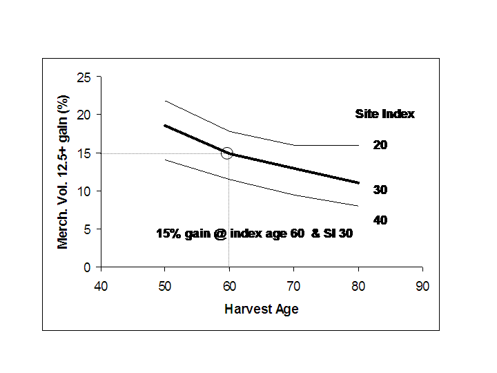

In this Topic Hide
The solid curve in the Genetic Gain graph displays how the genetic gain in height declines from 14.3 percent at age 12 to 7.5 percent at index age 60. It continues to fall off throughout the life of the stand. The downward trend as far as age 50 is based on theory and aggregated data from many species observed around the world. The extended trend to older ages is based solely on model extrapolation, and can become negative. Consequently, the volume-age curves for improved and unimproved stands could cross at extreme ages (e.g. 300 years) - but such 'negative improvement' is not supported by science.
The broken curve in the Genetic Gain graph shows a second seedlot with the same genetic worth at age 60, but a later selection age (20 years). These plantations will perform differently over time because the response varies throughout the life of the stand, with the exception of age 60. Consequently, the volume gains predicted by the two datasets depart before and after age 60 in response to different selection ages. The corresponding volume-age relationship (not shown) would also reflect the impact of selection age but the separation of the curves would likely be very small. This example demonstrates why TASS must have both the genetic worth and selection age before it can perform yield projections.
The production of merchantable volume (12.5+) for comparable improved (GW 15; selection age 12) and unimproved stands is illustrated in the Volume-Age graph. Notice that the absolute volume gain increases to about age 60 and declines thereafter - the result of a diminishing percent gain applied to an increasing volume. From a harvest scheduling perspective, the declining gain will ensure that improved stands have priority over unimproved stands. This would not be the case if we assumed that tree improvement increases volume by a fixed percentage throughout the rotation.
It would be unreasonable to expect the genetic gain to apply uniformly across all sites of the same age when the rotation age is known to vary greatly across the range of sites. By design, the application of genetic gain increases yield by the target amount close to the harvest age. In terms of harvest age, we assume that stands will be cut a little before the physical rotation age (culmination of MAI). This is illustrated in the following table and the Target Gain graph (below) for a stand of coastal Douglas-fir planted with 1100 trees/ha with a genetic worth of 15% @ age 60. This example was created with TIPSY version 4.4. No OAFs, no regen delay, stock height=30cm.
Site Index |
Ht GW00 |
Ht GW15 |
% Ht gain |
tVol GW00 |
tVol GW15 |
% tVol gain |
mVol GW00 |
mVol GW15 |
% mVol gain |
Reported gain |
20 |
21.2 |
22.7 |
7.08% |
280 |
326 |
16.43% |
243 |
287 |
18.11% |
16.2% |
30 |
32.0 |
34.4 |
7.50% |
667 |
763 |
14.39% |
621 |
716 |
15.30% |
14.4% |
40 |
43.3 |
46.5 |
7.39% |
1119 |
1240 |
10.81% |
1072 |
1195 |
11.47% |
10.8% |
GW00=unimproved seed; GW15=15% genetic worth; Ht=site height; tVol=total Volume; mVol=merch Volume 12.5+cm: Reported gain from TIPSY Stand Description
Note: While absolute volumes increase with site index, percent volume gains decline.

The target gain in volume will likely occur closer to the economic rotation age which usually precedes the physical rotation age. The table below shows the same scenarios run with 500 instead of 1100 trees. Results are similar.
Site Index |
Ht GW00 |
Ht GW15 |
% Ht gain |
tVol GW00 |
tVol GW15 |
% tVol gain |
mVol GW00 |
mVol GW15 |
% mVol gain |
Reported gain |
20 |
21.2 |
22.7 |
7.08% |
196 |
235 |
19.90% |
176 |
214 |
21.59% |
20.0% |
30 |
32.0 |
34.4 |
7.50% |
561 |
660 |
17.65% |
531 |
627 |
18.08% |
17.6% |
40 |
43.3 |
46.5 |
7.39% |
1056 |
1211 |
14.68% |
1016 |
1169 |
15.06% |
14.7% |
For a particular species and management regime, the percent genetic gain generated by TIPSY at index age will only coincide with the genetic worth of the seedlot on the reference site as illustrated below for stands with a genetic worth of 10% (TIPSY default) planted with 1100 trees/ha.
Species |
Index age |
Reference site index (m)
|
All
Coastal |
60 |
30 |
Interior |
|
|
Lodgepole pine |
60 |
20 |
White spruce |
80 |
17.5 |
Western larch |
60 |
__ |
Douglas-fir |
60 |
25 |